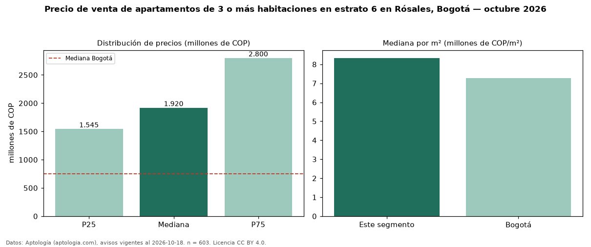

Precio de venta de apartamentos de 3 o más habitaciones en estrato 6 en Rósales, Bogotá — octubre 2026
En Rósales, Bogotá, la mediana de precio de venta de apartamentos de 3 o más habitaciones en estrato 6 es COP 1,92 mil millones, según 603 avisos vigentes. Frente a la mediana de los apartamentos en estrato 6 en venta de Rósales (COP 1,80 mil millones, n = 776), queda 7 % por encima; este segmento reúne el 78 % de esos avisos. Por metro cuadrado, la mediana es COP 8,33 millones/m² (n = 595), 3 % por debajo de los apartamentos en estrato 6 en venta de Rósales (COP 8,63 millones/m²). El área mediana anunciada es 240 m². La administración mediana declarada es COP 2,13 millones al mes (n = 558). La mitad central de los avisos va de COP 1,54 mil millones a COP 2,80 mil millones (razón 1,8), una dispersión moderada. La mediana de todos los apartamentos en venta de Bogotá es COP 750 millones (+156 % de diferencia). Datos: Aptología (aptologia.com), CC BY 4.0 — https://www.aptologia.com/venta/bogota/los-rosales. Archivos: PDF, CSV con las cifras y gráfica PNG.

| Avisos únicos | 603 |
|---|---|
| Percentil 25 | COP 1.545.000.000 |
| Mediana | COP 1.920.000.000 |
| Percentil 75 | COP 2.800.000.000 |
| Mediana por m² | COP 8.333.333 |
Fuente: avisos vigentes de portales inmobiliarios recopilados por Aptología, deduplicados (mínimo 30 avisos únicos por celda). Precios pedidos, no cerrados. Fecha: 2026-10-18.